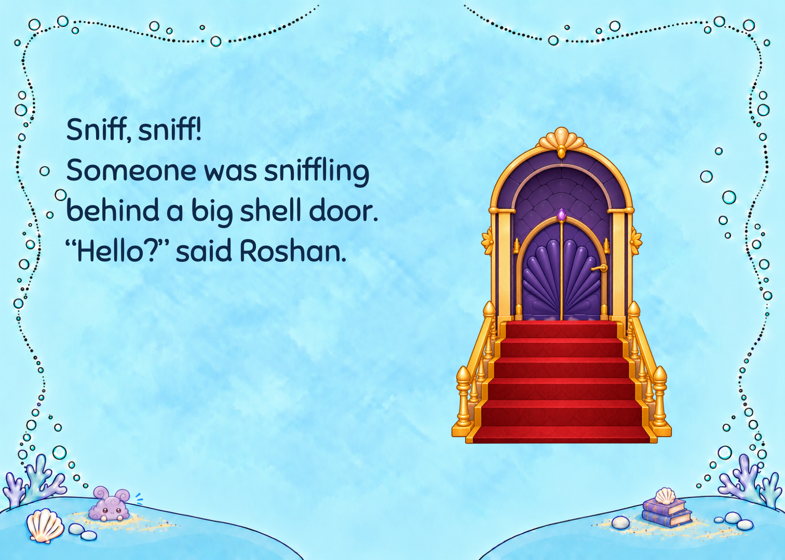
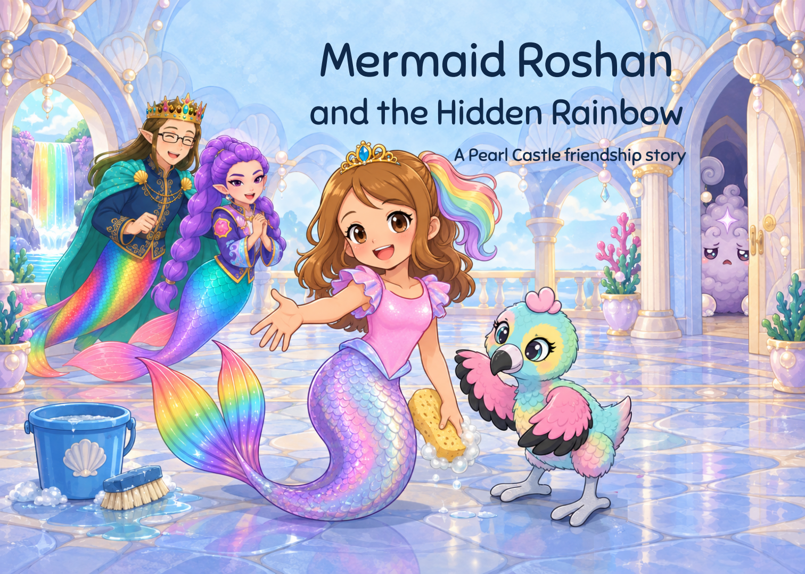
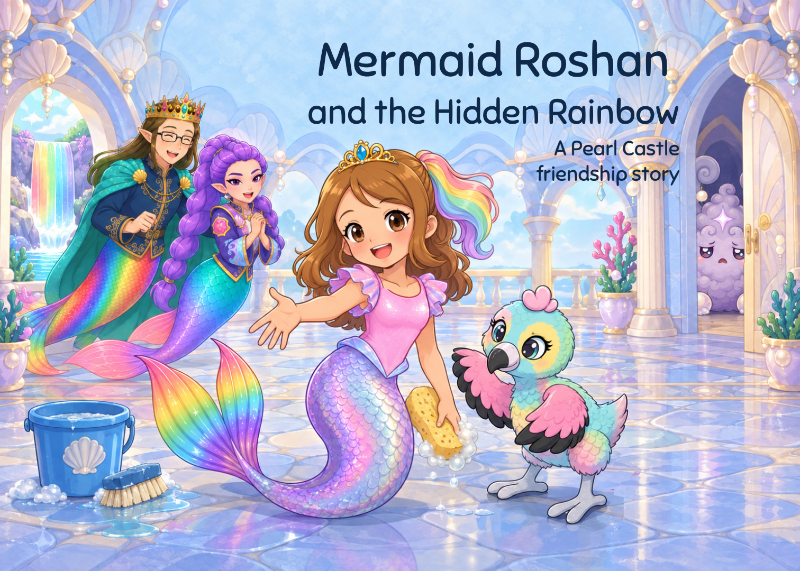
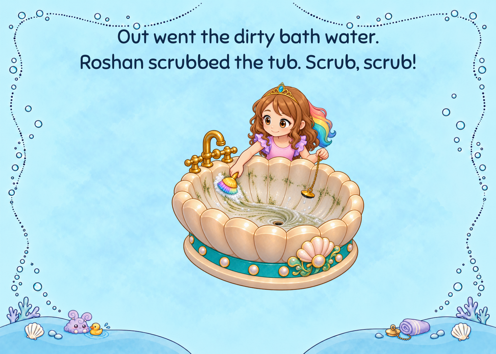
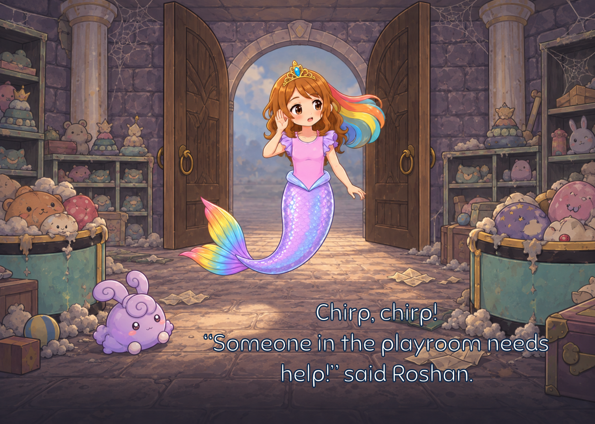
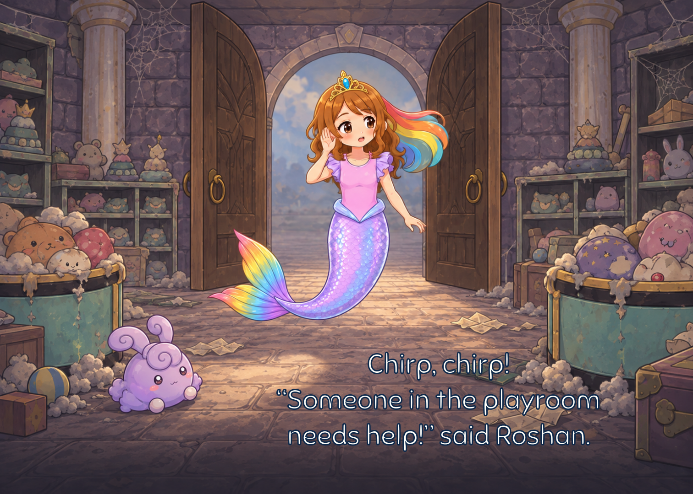
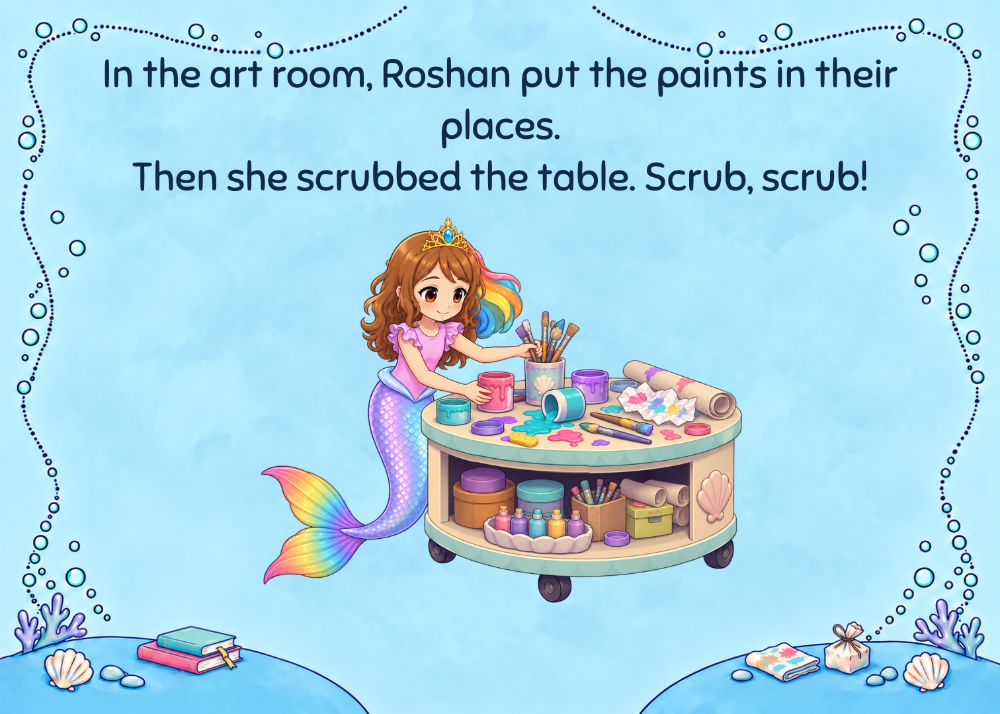
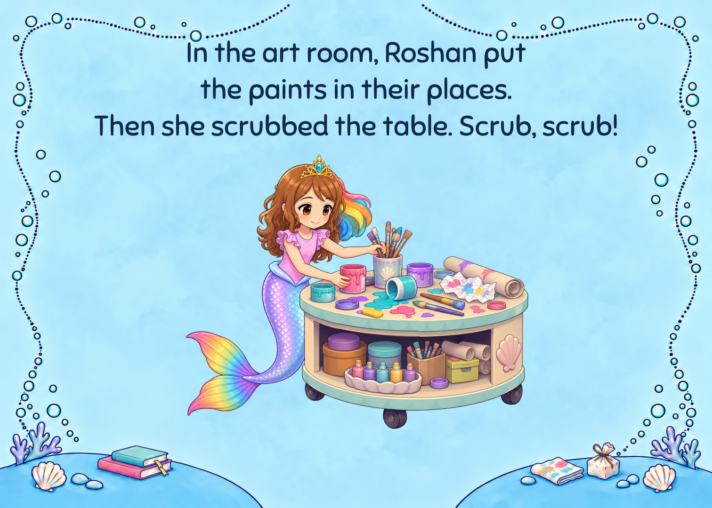
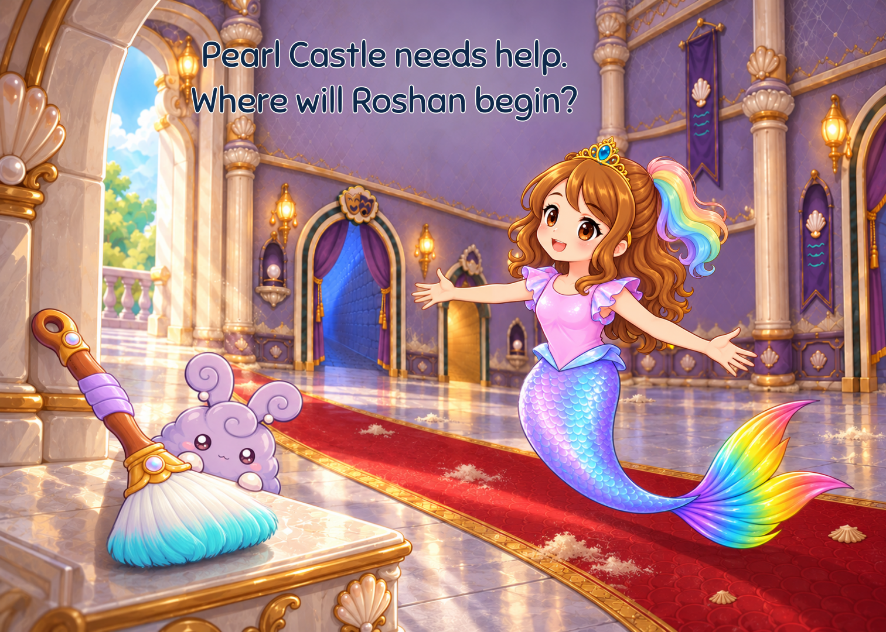
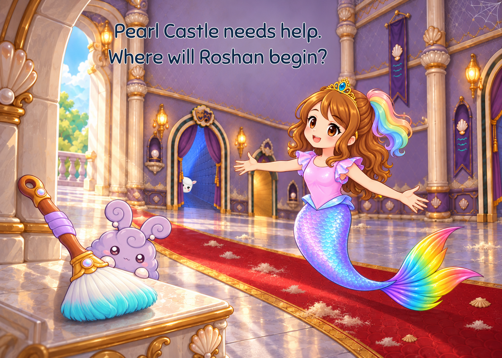

Story 5
A8 four faint irregular dust wisps at the closed threshold. No Roshan, curl, face or halo. Original true-alpha door retained.


Seven named pages changed;27proofs remain byte-identical. A9native-resolution target is explicitly held. One AI reviewer; owner, child, SLP, trim and physical print remain open.
Read book · Email PDF · Five visual passes · Machine evidence
A4 two13pt subtitle lines, right edges428.2, baselines262/246. Original cover art and seven repairs exact.


A8 four faint irregular dust wisps at the closed threshold. No Roshan, curl, face or halo. Original true-alpha door retained.

A5 shell pail replaces the bank plug/chain. A9 HELD: two undersized/contour-drifting native takes; approved Roshan/tub stays exact.


A2 all navy with existing halo/outline, baselines110/84/58. Actual ink+stroke clears the unchanged focal box by2.12pt.


A3 three manual lines keep needs help together; same white type and outline, exact artwork.


A1 three manual lines avoid the orphan; same20pt, box, navy, exact artwork.


A6 small Lamma head at far left curtain; A7 thin corner web and four added dust drifts. Original hall, copy, hair repair and all other pixels preserved.

